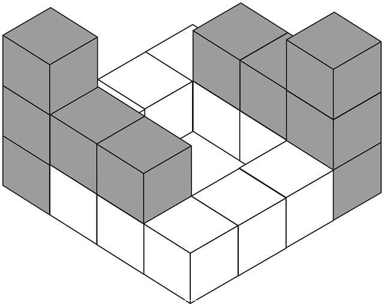

Лівий блок
Це текст абзацу, який обтікає блок зліва. Він займає простір праворуч від картинки і виглядає як стовпчик.
Правий блок
А тут блок праворуч, а текст обтікає його зліва. Так зручно робити, наприклад, статті з ілюстраціями.
Лівий блок
Якщо додати ще один абзац після блоку без очищення, він теж буде обтікати картинку.
Тут ми використали
clear: both; — і текст пішов нижче блоку, а не поруч.